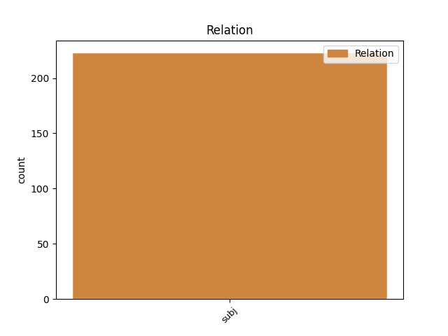
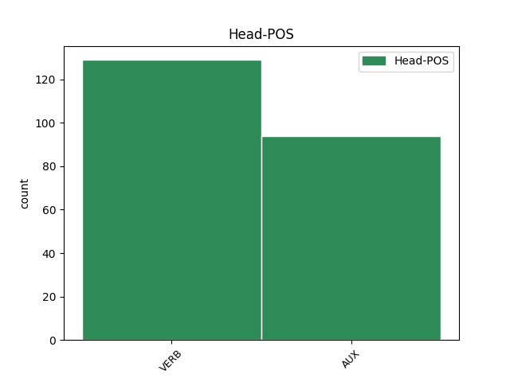
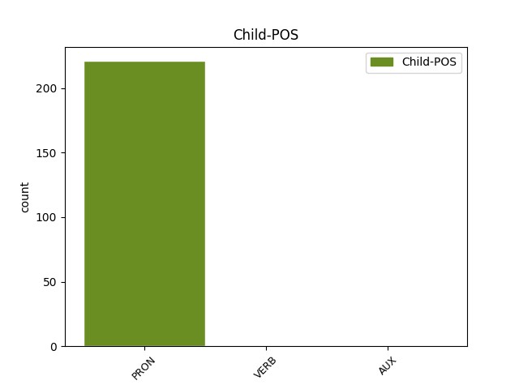

Distribution of features within this leaf



Agreement Rules sorted by frequency.
- When the dependent token is the subject(subj) of the head token,
1 E _ _ _ _ 0 _ _ _
2 lui lui PRON PE Gender=Masc|Number=Sing|Person=3|PronType=Prs 13 subj _ SpaceAfter=No
3 , _ _ _ _ 0 _ _ _
4 Berlusconi _ _ _ _ 0 _ _ _
5 , _ _ _ _ 0 _ _ _
6 per _ _ _ _ 0 _ _ _
7 cercare _ _ _ _ 0 _ _ _
8 di _ _ _ _ 0 _ _ _
9 arginare _ _ _ _ 0 _ _ _
10 le _ _ _ _ 0 _ _ _
11 polemiche _ _ _ _ 0 _ _ _
12 si _ _ _ _ 0 _ _ _
13 dichiara dichiarare VERB V Mood=Ind|Number=Sing|Person=3|Tense=Pres|VerbForm=Fin 0 _ _ _
14 allibito _ _ _ _ 0 _ _ _
15 per _ _ _ _ 0 _ _ _
16 l' _ _ _ _ 0 _ _ _
17 interpretazione _ _ _ _ 0 _ _ _
18 che _ _ _ _ 0 _ _ _
19 si _ _ _ _ 0 _ _ _
20 è _ _ _ _ 0 _ _ _
21 voluta _ _ _ _ 0 _ _ _
22 dare _ _ _ _ 0 _ _ _
23 ad _ _ _ _ 0 _ _ _
24 un _ _ _ _ 0 _ _ _
25 passaggio _ _ _ _ 0 _ _ _
26 estratto _ _ _ _ 0 _ _ _
27 da _ _ _ _ 0 _ _ _
28 il _ _ _ _ 0 _ _ _
29 contesto _ _ _ _ 0 _ _ _
30 " _ _ _ _ 0 _ _ _
31 di _ _ _ _ 0 _ _ _
32 la _ _ _ _ 0 _ _ _
33 sua _ _ _ _ 0 _ _ _
34 conferenza _ _ _ _ 0 _ _ _
35 stampa _ _ _ _ 0 _ _ _
36 di _ _ _ _ 0 _ _ _
37 giovedì _ _ _ _ 0 _ _ _
38 . _ _ _ _ 0 _ _ _
Disagree Examples:
1 I _ _ _ _ 0 _ _ _
2 Tram _ _ _ _ 0 _ _ _
3 sono essere AUX VA Mood=Ind|Number=Sing|Person=1|Tense=Pres|VerbForm=Fin 0 _ _ _
4 anch' _ _ _ _ 0 _ _ _
5 essi essi PRON PE Gender=Masc|Number=Plur|Person=3|PronType=Prs 3 subj _ _
6 usciti _ _ _ _ 0 _ _ _
7 imbandierati _ _ _ _ 0 _ _ _
8 . _ _ _ _ 0 _ _ _
1 Fra _ _ _ _ 0 _ _ _
2 trentaquattro _ _ _ _ 0 _ _ _
3 anni _ _ _ _ 0 _ _ _
4 ( _ _ _ _ 0 _ _ _
5 prima _ _ _ _ 0 _ _ _
6 anzi _ _ _ _ 0 _ _ _
7 , _ _ _ _ 0 _ _ _
8 molto _ _ _ _ 0 _ _ _
9 prima _ _ _ _ 0 _ _ _
10 ) _ _ _ _ 0 _ _ _
11 Domenico _ _ _ _ 0 _ _ _
12 scorgerà _ _ _ _ 0 _ _ _
13 inaspettatamente _ _ _ _ 0 _ _ _
14 i _ _ _ _ 0 _ _ _
15 fuochi _ _ _ _ 0 _ _ _
16 di _ _ _ _ 0 _ _ _
17 il _ _ _ _ 0 _ _ _
18 mio _ _ _ _ 0 _ _ _
19 accampamento _ _ _ _ 0 _ _ _
20 e _ _ _ _ 0 _ _ _
21 si _ _ _ _ 0 _ _ _
22 domanderà _ _ _ _ 0 _ _ _
23 perché _ _ _ _ 0 _ _ _
24 mai _ _ _ _ 0 _ _ _
25 in _ _ _ _ 0 _ _ _
26 il _ _ _ _ 0 _ _ _
27 frattempo _ _ _ _ 0 _ _ _
28 , _ _ _ _ 0 _ _ _
29 io io PRON PE Number=Sing|Person=1|PronType=Prs 30 subj _ _
30 abbia avere AUX VA Mood=Sub|Number=Sing|Person=3|Tense=Pres|VerbForm=Fin 0 _ _ _
31 fatto _ _ _ _ 0 _ _ _
32 così _ _ _ _ 0 _ _ _
33 poco _ _ _ _ 0 _ _ _
34 cammino _ _ _ _ 0 _ _ _
35 . _ _ _ _ 0 _ _ _
1 dopo _ _ _ _ 0 _ _ _
2 di _ _ _ _ 0 _ _ _
3 te _ _ _ _ 0 _ _ _
4 il _ _ _ _ 0 _ _ _
5 silenzio _ _ _ _ 0 _ _ _
6 , _ _ _ _ 0 _ _ _
7 o _ _ _ _ 0 _ _ _
8 Domenico _ _ _ _ 0 _ _ _
9 , _ _ _ _ 0 _ _ _
10 a _ _ _ _ 0 _ _ _
11 meno _ _ _ _ 0 _ _ _
12 che _ _ _ _ 0 _ _ _
13 finalmente _ _ _ _ 0 _ _ _
14 io io PRON PE Number=Sing|Person=1|PronType=Prs 16 subj _ _
15 non _ _ _ _ 0 _ _ _
16 trovi trovare VERB V Mood=Ind|Number=Sing|Person=2|Tense=Pres|VerbForm=Fin 0 _ _ _
17 i _ _ _ _ 0 _ _ _
18 sospirati _ _ _ _ 0 _ _ _
19 confini _ _ _ _ 0 _ _ _
20 . _ _ _ _ 0 _ _ _
1 Forse _ _ _ _ 0 _ _ _
2 con _ _ _ _ 0 _ _ _
3 esagerata _ _ _ _ 0 _ _ _
4 confidenza _ _ _ _ 0 _ _ _
5 - _ _ _ _ 0 _ _ _
6 Dio _ _ _ _ 0 _ _ _
7 me me PRON PC Clitic=Yes|Number=Sing|Person=1|PronType=Prs 9 subj _ _
8 ne _ _ _ _ 0 _ _ _
9 avesse avere AUX VA Mood=Sub|Number=Sing|Person=3|Tense=Imp|VerbForm=Fin 0 _ _ _
10 distolto _ _ _ _ 0 _ _ _
11 - _ _ _ _ 0 _ _ _
12 gli _ _ _ _ 0 _ _ _
13 feci _ _ _ _ 0 _ _ _
14 i _ _ _ _ 0 _ _ _
15 complimenti _ _ _ _ 0 _ _ _
16 per _ _ _ _ 0 _ _ _
17 la _ _ _ _ 0 _ _ _
18 sua _ _ _ _ 0 _ _ _
19 eleganza _ _ _ _ 0 _ _ _
20 ; _ _ _ _ 0 _ _ _
21 e _ _ _ _ 0 _ _ _
22 osai _ _ _ _ 0 _ _ _
23 perfino _ _ _ _ 0 _ _ _
24 chieder _ _ _ _ 0 _ _ _
25 gli _ _ _ _ 0 _ _ _
26 chi _ _ _ _ 0 _ _ _
27 fosse _ _ _ _ 0 _ _ _
28 il _ _ _ _ 0 _ _ _
29 suo _ _ _ _ 0 _ _ _
30 sarto _ _ _ _ 0 _ _ _
31 . _ _ _ _ 0 _ _ _
1 E _ _ _ _ 0 _ _ _
2 io io PRON PE Number=Sing|Person=1|PronType=Prs 4 subj _ _
3 non _ _ _ _ 0 _ _ _
4 sono essere AUX VA Mood=Ind|Number=Plur|Person=3|Tense=Pres|VerbForm=Fin 0 _ _ _
5 superstizioso _ _ _ _ 0 _ _ _
6 . _ _ _ _ 0 _ _ _